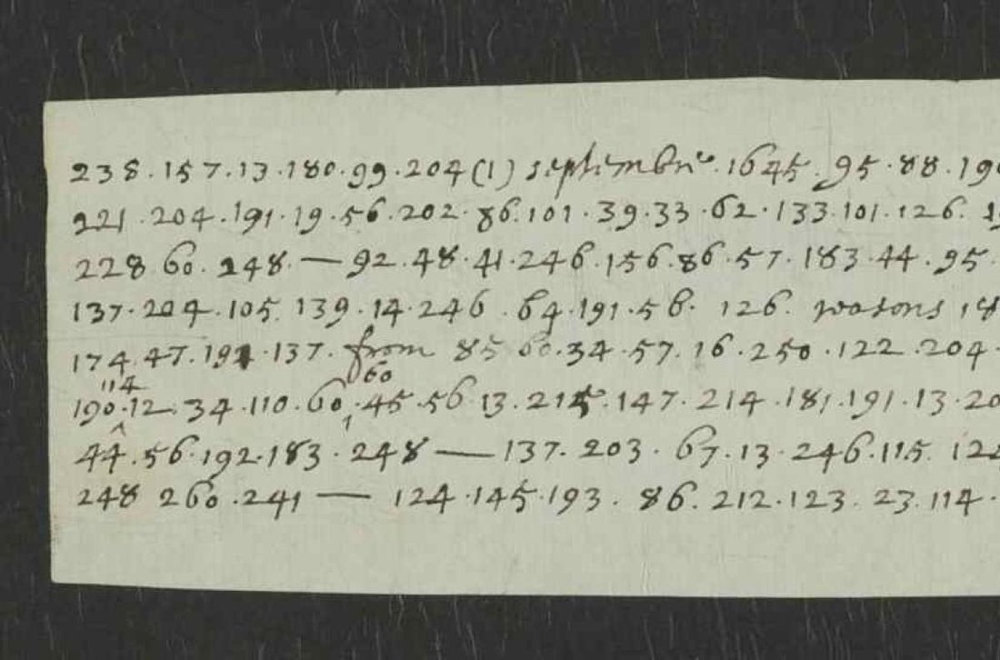

At a glanceNot solved · no key fits
- The letter
- A fragment of an English letter dated “(1) septembre 1645”, writer and recipient unknown; the clear words include earnestly, reasons and from.
- Where
- The National Archives, Kew, SP 106/10 f. 251 (DECODE R931, with a transcription by FK, 2020). Catalogue item 58.
- The cipher
- Numbers from 10 to 260 separated by dots: about 104 different numbers in about 192, so a code of words and names rather than a letter cipher.
- How it was tried
- Every key of the royalist correspondence of 1645–46 known on DECODE was applied: none gives sense.
- Why it resists
- A code this size cannot be rebuilt from so short a text without its key.
- Still open
- The whole letter. The matching key of autumn 1645 has to be found.
R931 came to this site with three records of an older codebreaker’s file in the same box (catalogue 58), but it has nothing to do with that file, which dates from 1623–25 and is written up apart (sp106box10). The letters of Henrietta Maria’s household in the same box, deciphered by George Lasry, use other keys (hm1645).
01The document

238.157.13.180.99.204 (1) septembre 1645. 95.88 …, the clear word from in line 5 with 60 written above it, and corrections written over lines 5 and 6. Image: The National Archives, Kew, SP 106/10 f. 251, via DECODE R931.The strip carries about 190 numbers from 10 to 260 separated by dots, with dashes between some runs, the clear words (1) septembre 1645, earnestly, reasons and from, and a second section marked (2). DECODE’s transcription (by FK, March 2020) was checked against the image. It counts about 192 numbers with 104 distinct values; a quick count of the DECODE file gives 176 and 101, the difference being its spacing and the numbers written above the lines. Either way, with so many different numbers in so short a text this is a nomenclator.
02What was tried
- George Lasry’s keys for the King–Queen and household correspondence of 1645–46 on DECODE (TNA SP 106, SP106-2, SP106-5, SP106-8) and his key for the Goring letter of the next record, R932 (SP106-3): coverage at most 45%, gibberish.
- The Charles I to Culpeper key of 1645 (BL Add MS 32256 ff. 6–7, DECODE R9117/R9118): letters 1–78, words 300–600, nothing in the 100–260 range used here; it does not fit. R9116 (1642) is a bare frequency tally and R9119 a blank sheet.
03What remains
- All the code numbers. The likeliest source of a key is the Digby, Nicholas and Goring correspondence of autumn 1645 (BL Add MS 32256 ff. 4–9, Egerton 2550; DECODE R9115–R9119, R3053–R3105).
- No printed calendar has been searched for the letter.
04Sources
- The National Archives, Kew, State Papers 106, box 10, f. 251: DECODE R931.
- Keys tried: George Lasry’s SP 106 keys on DECODE (2020); R932; R9117, R9118.
Notes and the DECODE transcription are in targets/sp106r931/.